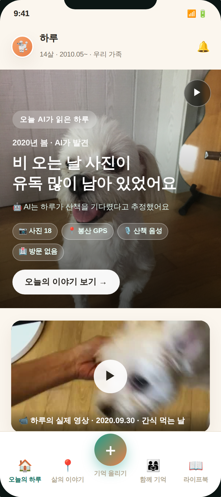
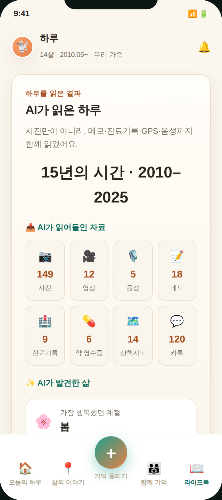
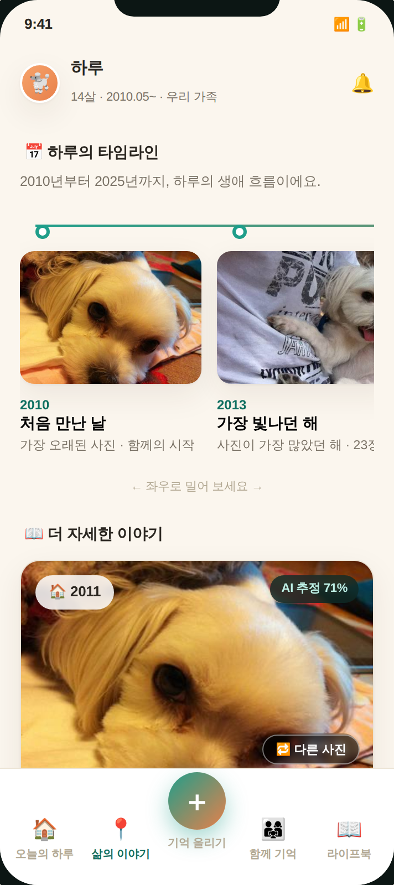
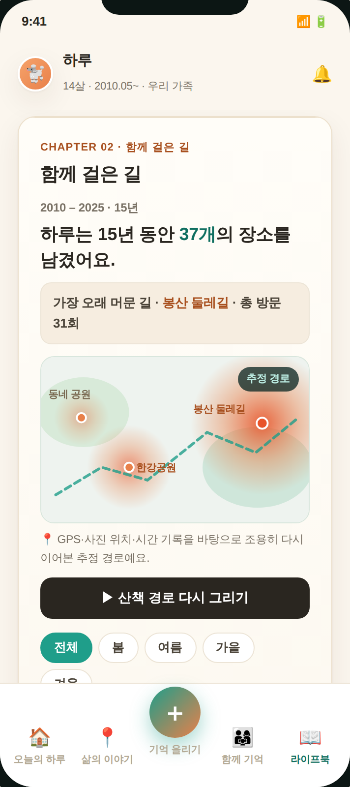
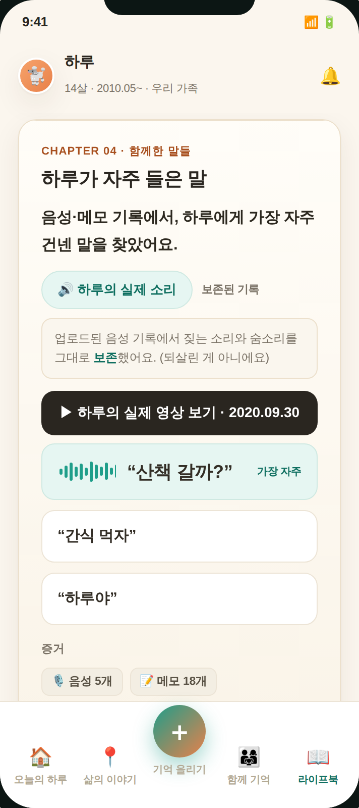
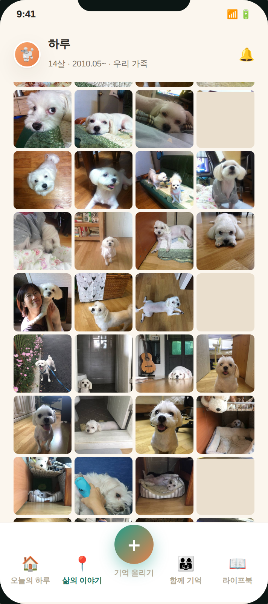
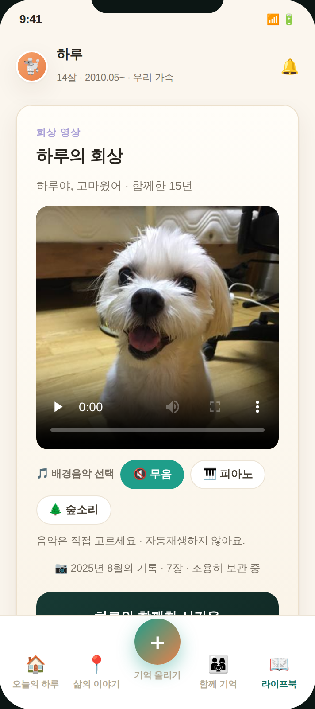
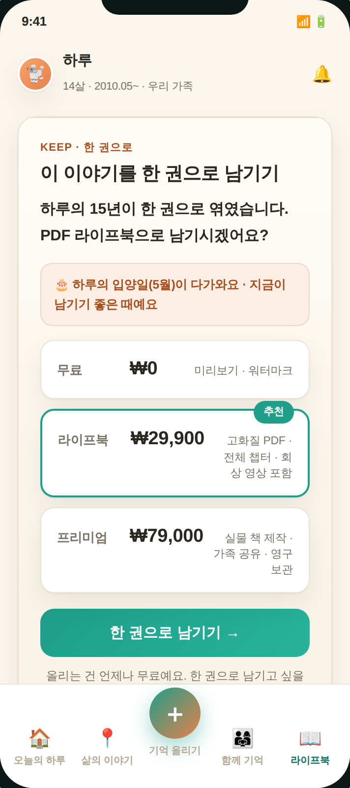
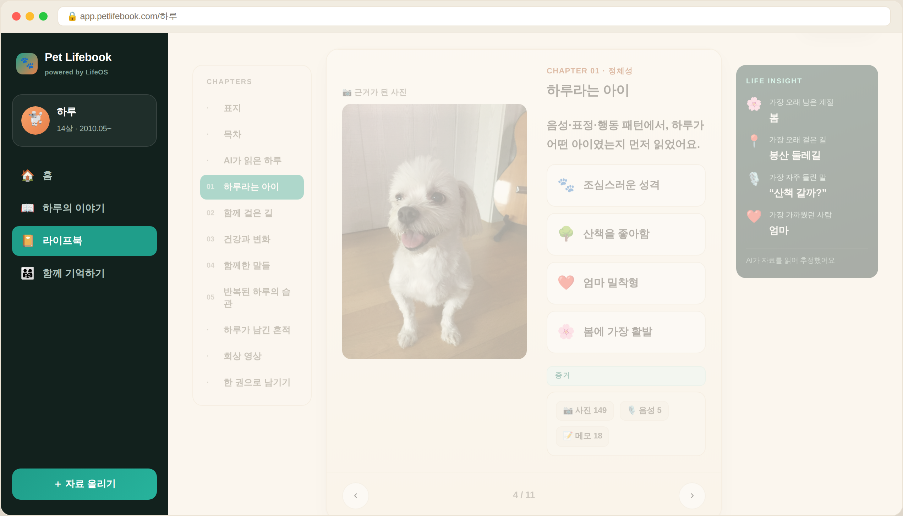

사진 저장 앱이 아닙니다. AI가 반려동물의 삶을 시간·관계·감정·건강 단위로 읽고, 한 권의 이야기로 구조화하는 Pet Lifebook입니다.

정리하지 않아도 됩니다. 그냥 올리면 AI가 날짜·장소·관계·건강 흐름을 읽어 한 권의 생애로 엮습니다.

흩어진 자료가 살아있는 생애 타임라인·회상 지도·실제 소리·라이프북으로 엮입니다.

2010–2025, 실제 사진과 함께 흐르는 생애. 각 시점에 AI가 발견한 이야기.

자주 간 곳일수록 진하게. 장소를 누르면 그날의 사진·소리·산책 영상.

“산책 갈까?” 가장 자주 들린 말과, 업로드된 음성에서 보존한 실제 소리.

흔들림·중복·저해상도를 자동 정리해 대표 컷만. 연도별 활동 그래프까지.

음악(피아노·숲소리·무음)을 직접 고르는 조용한 회상. 자동재생하지 않습니다.

“하루의 15년이 한 권으로 엮였습니다.” 라이프북 PDF·실물 책으로 보관.
좌측 챕터 목차 · 가운데 사진과 해석의 양면 spread · 우측 Life Insight · 하단 생애 타임라인. 예전에 쌓아둔 폴더를 한번에 올려도 좋습니다.

사진·음성·GPS·진료기록을 종합해 ‘삶의 패턴’을 추정. 근거와 신뢰도를 함께 보여줍니다.
엄마·아빠의 기억이 더해질수록 깊어지는 락인. AI 책이 아니라 가족 책.
‘부활’이 아닌 보존·회상. 자극이 아니라 위로. 자동재생·과장 없이 조용히.